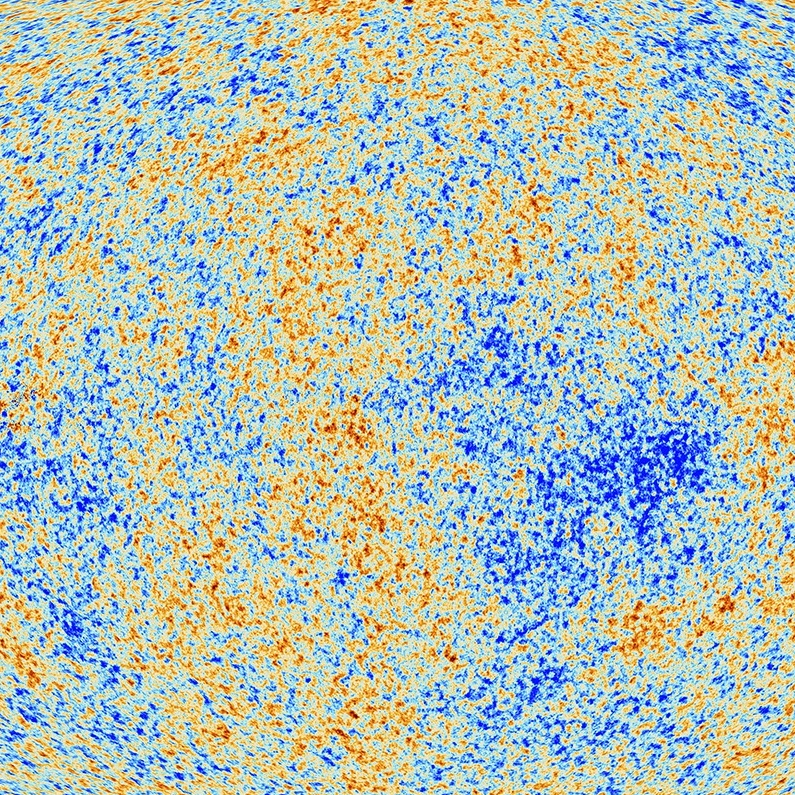

In the beginning..
... the energy-density distribution of the universe was very smooth. This makes it quite a comparatively easy thing to model, as we can use mathematical techniques known as perturbation theory to describe the small density fluctuations that permeated the universe shortly after the big bang. To give some idea of scale, the densest parts of the universe were approximately 1.00001 times more dense than the least dense parts. Due to the runaway nature of gravitational collapse, things were not destined to stay this way. Areas of the early universe that began as very slight overdensities accumulated more matter, and eventually the density variations become large enough that our mathematical approaches are no longer accurate; the density field has become non-linear. The universe today is incredibly non-linear, with vast cosmic voids dotted with points of extreme overdensity. The study of the evolution of the universe from this smooth initial state to the non-linear state we see today is referred to as the study of the large scale structure of the universe, and from it we can learn about fundamental properties of our universe; its geometry, its components, its age and its future.
Given that perturbation theory at some point become intractable, we need a way to model the universe in its non-linear state, and one of the techniques of doing this is to numerically simulate the process of structure growth. This involves distributing a large number of particles throughout a cube, and then evolving their positions and momenta according to the physics of whichever model we are trying to simulate. There are a number of state of the art codes available to do this, and my research focuses on a particular code called MP-Gadget, which implements gravity and baryonic physics effects in an expanding universe. In addition to providing much needed modelling of the late-time universe, these simulations also allow us to view the universe in a unique way. We can observe galaxy formation and mergers that take place over billions of years in a matter of seconds, and we can directly image the dark matter clustering of large portions of the universe. This provides valuable insight and intuition for researchers, as well as producing amazing images of the structure of our universe.
Below you can find some visualisations of our simulations, showing the dark matter and gas clustering along the filaments of the cosmic web. The original images are available on my github page here. Feel free to use them for whatever purpose, but please give credit if they are used in the public domain!